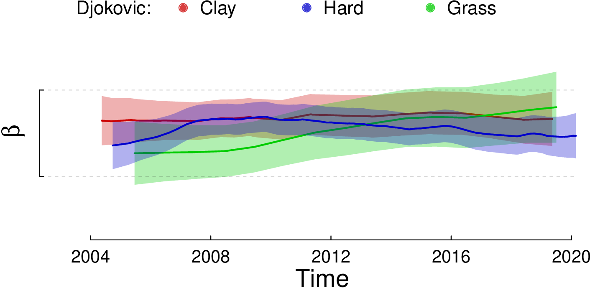

Real examples¶
The History of the Association of Tennis Professionals¶
In this last example, we analyze the complete history of the Association of Tennis Professionals (ATP) registered matches.
The database has 447000 games starting in 1915 until 2020 with more than 19000 participating players and is publicly available.
The information stored in a [single CSV file](https://github.com/glandfried/tennis_atp/releases/download/atp/history.csv.zip).
Each game has an identifier (i.e. match_id) and its tournament’s round number (i.e. round_number), where 0 represents the final game, 1 the semi-final, and so on.
The file also contains players’ identifiers and names.
For example, column w2_id is the second player’s identifier of the winning team, and l1_name is the first player’s name of the losing team.
Finally, we have the tournament’s name (tour_name), its identifier (tour_id), the tournament’s starting date (time_start), and the type of surface (ground).
import pandas as pd; from datetime import datetime
df = pd.read_csv('input/history.csv', low_memory=False)
columns = zip(df.w1_id, df.w2_id, df.l1_id, df.l2_id, df.double)
composition = [[[w1,w2],[l1,l2]] if d == 't' else [[w1],[l1]] for w1, w2, l1, l2, d in columns ]
times = [ datetime.strptime(t, "%Y-%m-%d").timestamp()/(60*60*24) for t in df.time_start]
h = History(composition = composition, times = times, sigma = 1.6, gamma = 0.036)
h.convergence(epsilon=0.01, iterations=10)
In this code, we open the file history.csv, create the variables times and composition, and instantiate the class History.
We define the event times as the days elapsed from a reference date to the tournament start date, assuming that the skill is the same within each tournament.
When generating the list composition we discriminate whether the games are doubles or singles using the column double.
The results are determined by the composition’s order, placing the winning team first.
When initializing the class History we set the values of sigma and gamma based on an optimization procedure previously performed.
Finally, we use the convergence() method to obtain TrueSkill Through Time estimates explicitly selecting the convergence criterion: when the change between iterations is less than 0.01 or when ten iterations are performed.
The following figure presents the estimated learning curves of some famous players in ATP’s history, which we identified using different colors The learning curves share a similar pattern: they begin with rapid growth, reach an unstable plateau, and end with a slow decline (we hidden the last portion of the players who have long final stages for visualization purposes).

The top bar indicates which player was at the top of the ATP’s ranking (the bar has no color when player number 1 is not included among the 10 players identified with colors). ATP’s ranking points are updated every Monday according to the prestige of the tournament and the stage reached. There is a relative coincidence between the skill estimates and who is at any given moment at the top of the ATP rankings. The following Table shows the historical ranking of players in the top position of the ATP’s ranking according to the number of weeks occupying the first position.
No |
Name |
Weeks at top |
|---|---|---|
1 |
Novak Djokovic |
320 |
2 |
Roger Federer |
310 |
3 |
Pete Sampras |
286 |
4 |
Ivan Lendl |
270 |
5 |
Jimmy Connors |
268 |
6 |
Rafael Nadal |
209 |
7 |
John McEnroe |
170 |
8 |
Bjorn Borg |
109 |
9 |
Andre Agassi |
101 |
10 |
Lleyton Hewitt |
80 |
11 |
Stefan Edberg |
72 |
12 |
Jim Courier |
58 |
13 |
Gustavo Kuerten |
43 |
14 |
Andy Murray |
41 |
15 |
Ilie Nastase |
40 |
16 |
Mats Wilander |
20 |
However, TrueSkill Through Time allows comparing the relative ability of players over time: the 10th player in the historical ATP’s ranking, Hewitt, is a product of the window of opportunity that was opened in the year 2000; and the 4th most skilled player, Murray, is ranked 14th just above Nastase. Individual learning curves enable recognizing special periods of crisis and prolonged stability of the professional players, and even the effects of emotional slumps such as those suffered by Aggasi and Djokovic. It is worthwhile to note that the skill of tennis players did not increase abruptly over the years: contrary to what might have been expected, the players of the 1980s were more skilled than those of the 1990s, and reached a skill similar to what Federer, Nadal and Djokovic had in 2020, even though the latter reached higher values for a longer time.
Multidimensional skills¶
In the previous example, we summarize the players’ skills in a single dimension.
TrueSkill Through Time allows estimating multi-dimensional skills.
It is known that the ability of certain tennis players varies significantly depending on the surface.
To quantify this phenomenon, we propose modeling each player as a team composed of a generic player, who is included in all the games, and another player representing the ability of the player on a particular surface.
For example, Nadal will be represented as a two-player team: Nadal_generic and Nadal_clay when playing on this kind of surface, and Nadal_generic and Nadal_grass when participating in the Wimbledon tournament.
import pandas as pd
from trueskillthroughtime import *
from datetime import datetime
df = pd.read_csv('input/history.csv', low_memory=False)
columns = zip(df.w1_id, df.w2_id, df.l1_id, df.l2_id, df.double, df.ground)
composition = [[[w1,w1+g,w2,w2+g],[l1,l1+g,l2,l2+g]] if d == 't' else [[w1,w1+g],[l1,l1+g]] for w1, w2, l1, l2, d, g in columns ]
times = [ datetime.strptime(t, "%Y-%m-%d").timestamp()/(60*60*24) for t in df.time_start]
columns = zip(df.w1_id, df.w2_id, df.l1_id, df.l2_id)
player_ids = set([ player for game in columns for player in game ])
priors = dict([(p, Player(Gaussian(0., 1.6), 1.0, 0.036) ) for p in player_ids])
h_ground = History(composition = composition, times = times, beta = 0.0, sigma = 1.0, gamma = 0.01, priors = priors)
h_ground.convergence(epsilon=0.01, iterations=10)
In this example, we keep the same prior as before for all the generic players, but in this code we define them using the variable priors.
We create the teams depending on whether the game is double or single, adding the specific surface skills of each player as their teammate (we use the operator + to concatenate strings).
As the specific surface skills are not defined in the variable prior, they are initialized using the default values defined in the class History.
We also define beta as null for specific surface skills to avoid adding additional noise to the players’ performance, keeping the scale of the estimates stable.
We select a sigma that we consider sufficiently large and a dynamic factor gamma representing 1% of the prior uncertainty.
In the following Figures, we show the skill difference that Nadal and Djokovic have in each of the three types of ground.

Nadal has a notorious skill difference when playing on different surfaces. The Nadal’s skill difference between clay and grass grounds is greater than one \(\beta\), which means at least 76% difference in probability of winning compared to itself. On the contrary, Djokovic has very similar skills in the three types.
In the case of Nadal (id "n409"), it seems important to model the skill’s multi-dimensionality, while in Djokovic’s case (id "d643") it seems reasonable to summarize it in a single dimension.
To assess whether the complexity added by modeling multi-dimensionality is appropriate in general terms, we can compare the joint prior prediction of the models, calling the method log_evidence() of the class History.
h_ground.log_evidence()
In tennis, it is sufficient to summarize the skills in a single dimension since the log_evidence is maximized when the parameters of the surface’s factors (i.e. \(\sigma\) and \gamma) vanish.
In other examples, where the multi-dimensionality of skills could be more relevant, it should be necessary to model the skills of all agents using different components.
If we consider only the games in which Nadal participates, optimality is achieved when the parameters take the values \(\sigma=0.35\) and \(\gamma=0\), meaning that it is necessary to model multidimensional skills (\(\sigma>0\)) but considering that their effect does not change over time (\(\gamma = 0\)). In this scenario, Nadal’s ability on Clay is \(0.87\beta\) higher than on Hard and \(1.05\beta\) higher than on Grass.